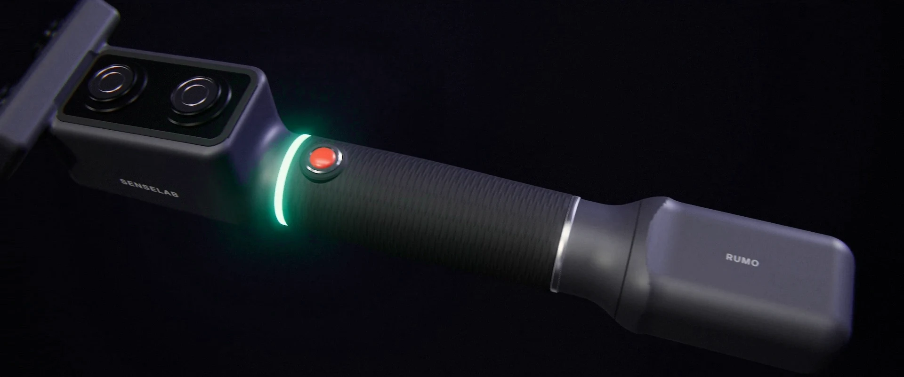
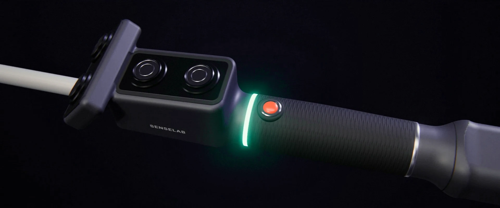
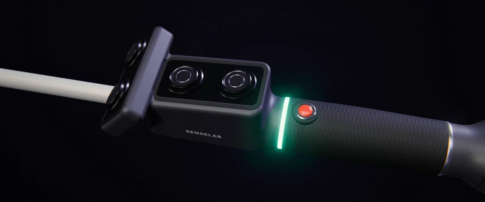
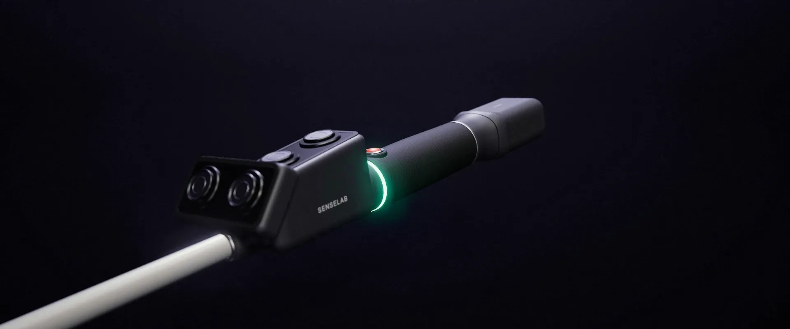
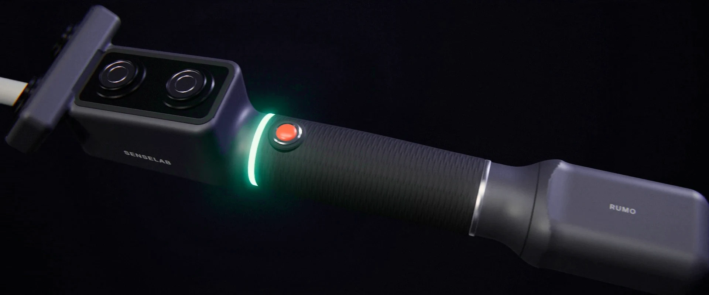

Walk straight across open spaces
Hold the button for a second to lock your direction. In a square or on a wide avenue, the handle tells you which way to adjust.
RUMO is a white cane that vibrates in your hand to warn you of obstacles up to 2.5 metres ahead and up to 1.5 metres at head height. The essentials work without a phone.
A prototype being developed at the University of Aveiro
The safety features run inside the handle. If the battery runs out, you still have a white cane. Switch the phone off below to see what keeps working.

Connected. Your phone adds alerts, location and spoken descriptions.
The tip still reads the ground. The sensors cover the space between your waist and your head, where branches, signs and open lorry doors can catch you out.
Where you feel it tells you what it is. The rhythm tells you how far away it is. Move an obstacle closer and follow the signal on each motor.
A cane sweeps from side to side all day, so we keep the handle light and put the weight where it will not tire your wrist.
The processor reads the sensors many times a second and decides on the spot, with no network needed. The aim is for you to feel a warning almost as soon as an obstacle appears.
One faces straight ahead and the other looks upwards. Their wide beam is well suited to railings, poles and glass doors, and sunlight does not affect it.
Thumb, index finger, palm and fingertips. Each motor has one meaning, so your hand quickly learns to read them.
At night you rest the handle on its base and it charges by induction, with no plug to find. You can also charge it with a USB-C cable.
Hold the button for a second to lock your direction. In a square or on a wide avenue, the handle tells you which way to adjust.
Tap the button twice and your phone describes what is around you, out loud.
If you drop it, it beeps until you pick it up. If it lies still for 45 seconds, it checks that you are all right.

Designed to cope with rain, dust, cold and heat, in a case made for everyday life on the street.

To avoid false alarms, you hold the button for three seconds and then have five seconds to cancel. Try it here: this is only a demonstration.
It opens in any web browser. Only the people the cane user invites can see alerts and location.
This is an example. The dashboard is still in development.


A complete white cane, with all the electronics in a light, balanced handle. The name says what it is for: rumo is Portuguese for ‘course’, and RUMO helps you keep yours.
Turn the model, choose a point to find out what it does, or switch to the inside view to see the electronics in the handle.
The video has no sound.
One sensor faces ahead and the other upwards. Their wide beam is well suited to railings, fences and glass doors, and sunlight does not affect it.
How it works →The cane remembers the direction you set and helps you keep to it. Near large metal structures that can confuse the compass, it pauses and lets you know, rather than guiding you the wrong way.
Designed to cope with rain, dust, cold and summer heat, in a case built to take the knocks of everyday use.
RUMO is still a prototype. These details describe what we are aiming for and may change after testing.
| Detection ahead | Warns you from 2.5 m away. You can change this in the app. |
|---|---|
| Detection at head height | Warns you from 1.5 m away. You can change this in the app. |
| Response time | Designed to warn you almost as soon as an obstacle comes into range. |
| Alerts | Four vibration motors in the handle, and a buzzer. |
| Orientation | A compass and motion sensor, for the heading lock and fall detection. |
| Phone connection | Secure, encrypted Bluetooth. Works with Android and iPhone. |
| Battery | Rechargeable lithium-ion battery, designed to last the whole day. |
| Charging | On the induction base, which is included, or with a USB-C cable. A full charge takes one night. |
| Durability | Designed to resist splashes and dust, in cold and hot weather. |
| Weight | Light, with the weight close to your hand. |
| Accessibility | The app is designed for screen readers such as VoiceOver and TalkBack. The carer dashboard follows recognised web accessibility guidelines. |
It keeps the phone’s camera facing forwards, so you can ask for a description of your surroundings without holding your phone.
Warnings about crossings, steps and doors, without you having to ask.
New motors that can point to directions in between, and use less power.
So you can charge the cane on any Qi wireless charging pad.
Offline maps that work together with the heading lock.


RUMO is designed so you can learn it in a single half-hour session. There are no screens or menus: everything comes through your hand.
The tip of the cane reads the ground, as it always has. The two ultrasonic sensors in the handle take care of the rest: one faces ahead and the other looks upwards, at the space between your waist and your head.
We chose ultrasound rather than laser because its wider beam is better suited to railings, fences and poles that a narrow laser beam can miss. It also works in any light, and with glass.
When you walk, you hold the cane at about 40° to the ground. We designed the handle around that position: the front sensor ends up level, looking straight ahead, and the top sensor points upwards to catch obstacles at chest and head height.
This way the two beams cover different areas and leave the ground to the tip of the cane.
Each motor sits against a different part of your hand and has one meaning. If there is an obstacle ahead and another overhead, the pulses take turns so you can tell them apart.
| Motor | Where you feel it | What it means |
|---|---|---|
| Front | Index finger | Obstacle ahead |
| Top | Thumb | Obstacle at head height |
| Left | Palm | Bear left |
| Right | Fingertips | Bear right |
| All four | Whole handle | General warnings: lost connection, low battery, SOS countdown and “Are you all right?” |
| Rhythm | Ahead | Overhead |
|---|---|---|
| No vibration | Over 2.5 m | Over 1.5 m |
| 1 pulse per second | 2.5 to 1.5 m | 1.5 to 1.0 m |
| 2 to 3 per second | 1.5 to 0.8 m | 1.0 to 0.6 m |
| 5 per second | 0.8 to 0.4 m | 0.6 to 0.3 m |
| Continuous | Under 0.4 m | Under 0.3 m |
You can adjust the warning distances and the strength of the vibration in the app. Obstacle warnings always come before direction cues.
It is waterproof and sits under your thumb. You can change what each gesture does in the app.
Read out by the app, or given as a number of pulses
Using your phone’s camera
Turns it on or off
A 5-second countdown, which any tap cancels
Any tap stops the beeping
An alert can start from the button or from a possible fall. If the cane has been dropped and lies still for 45 seconds, it asks if you are all right. If you do not answer within 30 seconds, it calls for help for you.
The cane tells the app, which sends a help request with your last known location.
immediatelyEach carer gets a notification on their phone and an alert on the dashboard, with your position on the map.
seconds later, with mobile dataThe first person to confirm takes charge. The others are told, and the app lets you know that help is on the way.
“I’ll help”The cane sounds its siren to attract people nearby, and your phone offers a one-tap call to 112.
as a back-upAll your contacts are alerted at the same time. This is the default, and it is always used when you press SOS yourself.
For falls, your contacts can be alerted one at a time, in the order you choose. This suits people who would rather call on someone close first.
| If this happens | RUMO does this |
|---|---|
| The phone switches off or is out of range | Detection, vibration and the heading lock keep working. The cane gives three long pulses, and your carers are told if the connection does not come back. |
| SOS with no phone connection | The cane’s siren sounds to attract people nearby. The alert is saved and sent as soon as the connection is back. |
| Phone with no mobile data | The alert waits and is sent as soon as possible. On some phones it can also go by text message. If no one responds in time, the cane sounds its siren. |
| Something confuses the compass | The heading lock pauses and lets you know, rather than giving wrong directions. It starts again by itself. |
| A sensor stops working | The cane warns you with a distinct vibration pattern and lets the app know. |
| Low battery | You get a warning in the handle and in the app, well in advance. Even with a flat battery, it is still a white cane. |
| Too little light for the camera | The app says the image is too dark. Everything else works as normal. |
If you use the cane, you get an app built for screen readers, with no maps or complicated screens. Your carers get a web dashboard with your location and alerts.
Designed to be used entirely with VoiceOver or TalkBack. There is no map to read: everything is spoken.
Tap the cane’s button twice and your phone’s camera picks out people, cars, chairs and text. It works without an internet connection while the app is open, and tells you how far away things are, as measured by the cane.
You can adjust the vibration strength, warning distances, button gestures and emergency contacts.
It is shared with your carers every 5 minutes and with every alert. You can pause sharing whenever you like.
It opens in any web browser, with nothing to install. It shows the last location of the person you look after, receives alerts as they happen and lets you say who is going to help.
This is an example. The app and dashboard are still in development.
The cane user decides who the contacts are and how alerts are sent. Carers can see these settings, but only the user can change them.
Your location, images and alerts are sensitive personal data. We use as little as possible, and only with your consent.
Location history is deleted after one day. Only the last known position is kept.
Photos taken to describe your surroundings are processed straight away and then deleted.
A carer can see your data only after you add them in the app. Each alert is visible only to the people who received it.
App data is stored in the EU and protected under the GDPR.
Connections between the cane and your phone, and between your phone and our servers, are encrypted. Only your paired phone can connect to the cane.

SenseLab develops assistive devices for people with visual, hearing, physical or cognitive disabilities. We are starting with mobility for blind and low-vision people.
Testing with users is the next step for the project. There are no dates yet, but we will let everyone who signs up know.
Blind and low-vision people, carers, and orientation and mobility instructors.
Up to 30 minutes of training, a walk with the cane, and a few tasks in the app using a screen reader.
Just write to us. Associations and schools can also organise sessions for their members.
Mission
To help people get around safely and independently, by building smart sensors into everyday objects.
Vision
A world where disability no longer stands in the way of getting around freely and easily.
We began by listening to online communities of blind and low-vision people, and we contacted ACAPO, the Portuguese association for blind and partially sighted people. User testing is the next step.
Every feature has to solve a real problem without adding something new that could go wrong.
A cane faces rain, sun and knocks every day. Our products have to cope with them too.
Location is shared only with the people you choose, and it is never sold.
In online communities, cane users told us about handles that tire the wrist, cases that do not survive life on the street, and open spaces that are hard to cross. So we left out anything that added weight without making you safer, such as hand warmers or health monitoring.
Rumo is Portuguese for the course you choose to follow. That is what our cane stands for: your freedom to decide where to go, and to get there on your own.
The arcs in our logo are detection waves: the way our products sense the world around the people who use them.
We are a team of thirteen Electrical and Computer Engineering students at the University of Aveiro.


Not for the essentials. Obstacle detection, vibration, the heading lock, the sound that helps you find the cane and the siren all work without a phone. Alerts to your contacts, location sharing and descriptions of your surroundings need the app. If the connection drops, the cane lets you know with three long pulses.
It is designed so you can learn it in a single 30-minute session. There are four vibration points and five button gestures to remember.
Yes, it is designed to resist rain, splashes and dust, although we still need to confirm this in testing. The USB-C port has a rubber cap. Do not put the cane under water.
We are designing it to last the whole day, which we still need to confirm in testing. If it has not moved for a few minutes, the cane goes to sleep to save power, and wakes up by itself when you pick it up. A full charge takes several hours, so we recommend leaving it on its base overnight.
Not yet. For now, induction charging works with the base provided, or you can use any USB-C cable. We plan to support standard Qi wireless chargers in a future version.
You have to hold the button for 3 seconds. The cane then starts a 5-second countdown, which you can feel as vibration. Any tap during that time cancels the request.
Only the contacts you choose in the app. You can pause location sharing whenever you like, and your location history is deleted after 24 hours.
No. It adds to your white cane skills rather than replacing them. We recommend talking to an orientation and mobility instructor before you start.
RUMO is still a prototype and is not on sale yet. You can ask to hear about the launch or sign up for testing.
Do you use a cane, look after someone who does, or represent an organisation? We would be glad to hear from you.
How we handle your data, what the warranty covers and the rules for using our products and services.
This English translation is provided for convenience. If the two versions differ, the Portuguese version applies.
Last updated: November 2026
SenseLab processes personal data in line with the General Data Protection Regulation (GDPR). We collect only what is needed for the product to work, and we never sell it.
To send emergency alerts, to show the user’s location to authorised carers and to keep the service running. Consent is given in the app and can be withdrawn at any time.
App data is stored on servers in the European Union. Some supporting services, such as sign-in, notifications and maps, are provided by global suppliers under EU standard contractual clauses.
You can ask to access, correct or delete your data, or to receive it in a portable format, and you can object to its processing, by emailing us. You can also lodge a complaint with the Portuguese data protection authority, the Comissão Nacional de Proteção de Dados (CNPD).
Last updated: November 2026
RUMO is a mobility aid that complements white cane techniques and orientation and mobility training. It does not replace the user's own attention or the emergency services.
Ultrasonic detection can miss very thin obstacles, surfaces that absorb sound, or obstacles in extreme conditions. Sending alerts depends on the phone's battery and network. If you are in immediate danger, call 112.
The user is responsible for keeping emergency contacts up to date and for inviting only trusted people to see their location.
This section will apply once RUMO goes on sale.
Last updated: November 2026
RUMO will carry the 3-year legal guarantee for consumer goods set out in Portuguese Decree-Law 84/2021. It covers manufacturing defects. It does not cover damage caused by misuse, by putting the cane under water or by opening the handle.
For distance purchases, you have 14 days from receipt to return the product without giving a reason, as long as it is complete and in good condition.
Email us describing the problem. We will reply with the next steps and, if needed, arrange to collect the cane.
Last updated: November 2026
RUMO is being designed to meet the European rules for radio equipment, hazardous substances and lithium batteries. The current prototype is not yet certified.
Last updated: November 2026
This site and the carer dashboard are built to WCAG 2.1, level AA. The app is being designed for VoiceOver and TalkBack. On this site you can enlarge the text, switch between light and dark themes and pause animations. All text uses Atkinson Hyperlegible, a typeface designed for readers with low vision.
If something on this site is hard to use, please email us. We will fix it as quickly as we can.
Last updated: November 2026
This site uses no advertising or tracking cookies. We only store your text size, theme and animation choices, and only in your own browser.